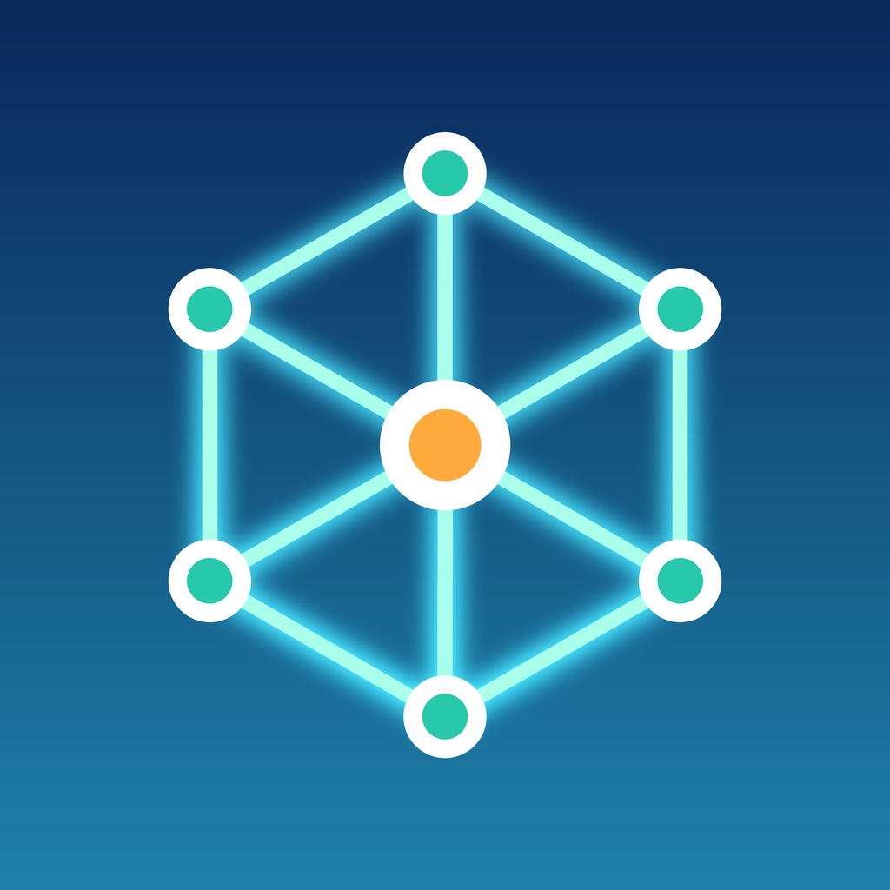

Meshline is a free, open source messenger that keeps working when the internet and cell service do not. Nearby iPhones pass end to end encrypted messages to each other over Bluetooth, so friends and family can stay in touch during outages, disasters, and crowded events.
Meshline is based on the open source bitchat project. Source code: github.com/psulli007/meshline.
© 2026 Faro.io Corp